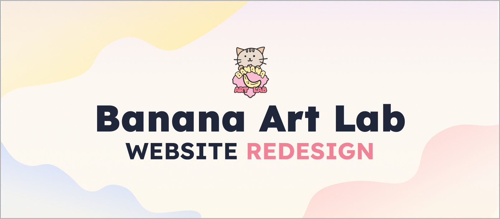
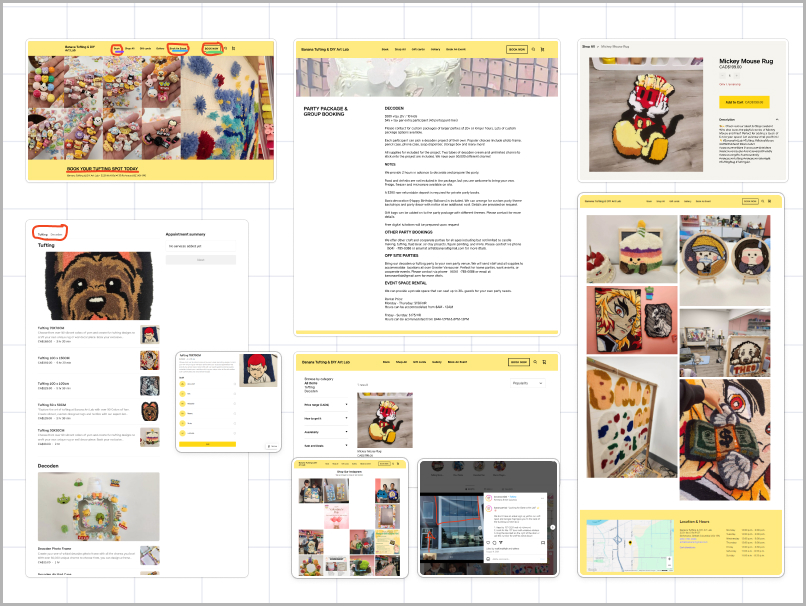
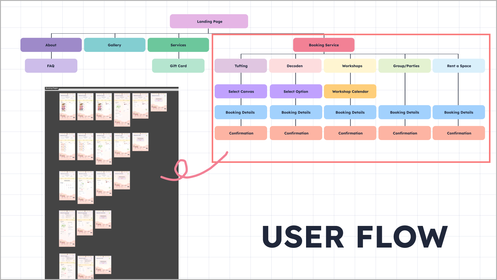
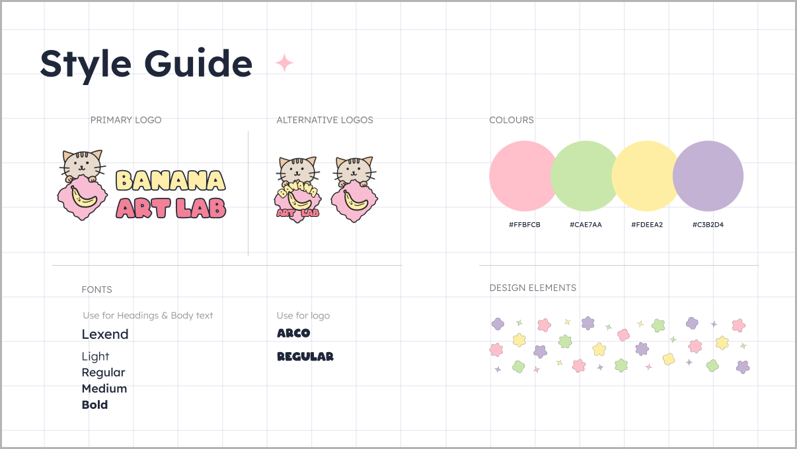
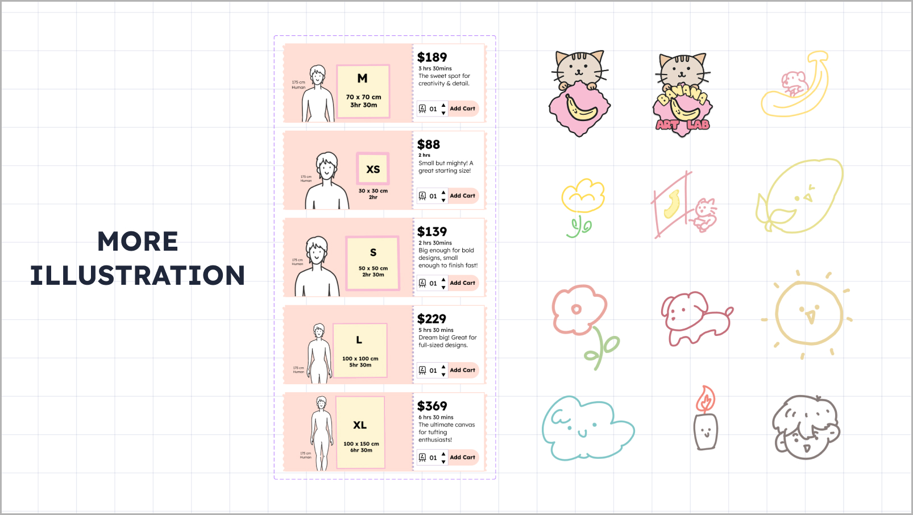
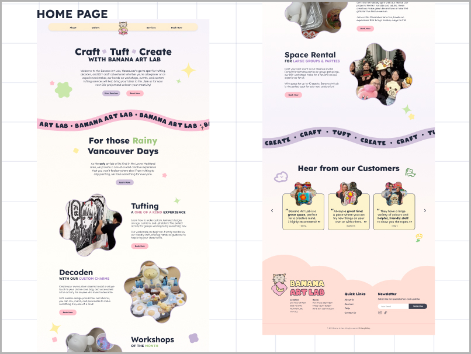
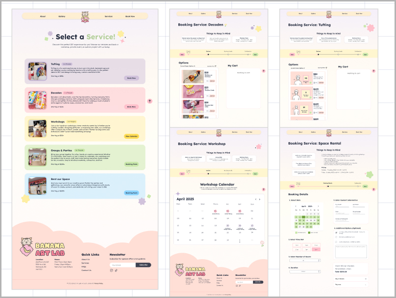
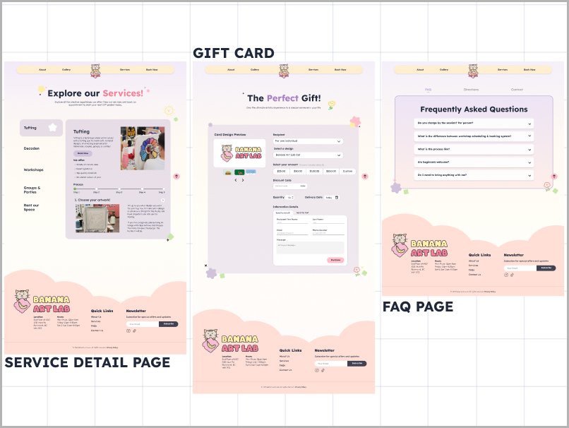
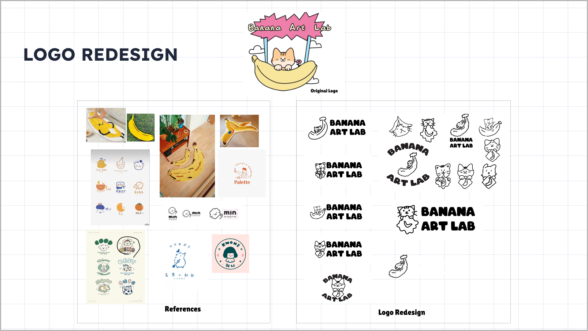

In February 2025, our team of four participated in the FLUI Design Hackathon — a 3-day design challenge where we partnered with Banana Art Lab, a Vancouver-based creative studio offering tufting, decoden, and DIY workshops. The existing site had no clear booking flow, inconsistent branding, and a confusing navigation — making it hard for first-time visitors to understand what the studio even offered, let alone book a session. We were tasked with redesigning it from the ground up: clearer booking flow, stronger brand identity, and a more cohesive visual experience — all within 72 hours.
Before diving into design, we audited the existing Banana Art Lab website and identified 8 core issues that were creating friction for users — especially first-time visitors trying to book a service.

Within the team, I owned two main areas: the booking system user flow and visual illustration work.
For the booking system, I mapped out how five distinct services — tufting, decoden, workshops, groups & parties, and space rental — could each have a consistent, step-by-step booking structure without feeling repetitive. The goal was to make each flow feel familiar while clearly reflecting the differences between services.
For illustration, I created custom visuals including a canvas size comparison graphic that the original site completely lacked, giving users a clearer sense of what each service involved before booking.

To reflect the client's request for a bubbly, playful aesthetic, we developed a full style guide — new logo, color palette, typography, and custom illustrations. I designed the new logo and created original illustrations used across the site, including decorative elements and service-specific visuals.


The redesigned site introduced a clear service selection page, a step-by-step booking flow for each of the five services, a gift card feature, and an FAQ page — all consistent in layout and visual tone.



We had one client meeting, a short brief, and 72 hours. Here's how we divided it:

Interact with the full prototype below — explore the home page, service selection, and booking flows.
Three days is short enough to feel the pressure, but long enough to learn what actually matters. I came away with a clearer sense of how to prioritize fast — not everything can be perfect, so you focus on what users will actually touch. Working in a team under a real client brief also showed me that alignment early saves time later: the 30 minutes we spent mapping the booking flow on Day 1 prevented a lot of confusion on Day 2. That realization — that 30 minutes of alignment saves hours of rework — changed how I approach any collaborative project.